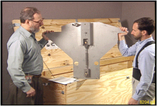

Operating Documentation
Direction 5440000, Rev# 5
Module Version 13.0, Version Date 11/2/10
Operating Documentation |
| ||||
| Strong Magnetic Field! | ||||
| Ferrous materials can become dangerous projectiles in the presence of the magnetic field Produced by the Signa Magnet. | ||||
| Do not Bring any ferromagnetic tools or equipment into the magnet room. |
| ||||
| Possible Personal Injury or Equipment Damage! | ||||
| The jack on the Tube Jacking Assembly is ferrous. Personal injury or equipment damage may result if taken too close to the magnet. | ||||
| Keep as far away from magnet bore as possible when removing from Magnet Room. |
| ||||
| Personal injury and equipment damage! | ||||
| Strong Magnetic Field present. | ||||
| When servicing any magnetic equipment, it is critically
important that the service engineer consciously plan the path to be
taken when moving highly ferrous devices in the magnet environment.
the path should be as far from the magnet as practical and avoid high
flux-density fields. Safety Requirements:
When planning a service path, it is critical that the path be clear and sufficiently wide. Ensure that there are no trip hazards, obstacles, clutter, slippery surfaces or other items even partially restricting the path. If there are portable obstacles in a path, remove them from the area and replace them after the service action is completed. It is required to walk the path prior to beginning service to ensure that there is sufficient space through which to pass for yourself and the object being serviced. |
| ||||
| Dangerous Work Area! | ||||
| Use of heavy equipment for coil removal and replacement presents hazards to all personnel in the area. | ||||
|
| ||||
| Possible Personal Injury or Equipment Damage! | ||||
| Any tube deflection indicates the Gradient Coil is in contact with the warm bore, thereby resisting free motion. Personal injury or damage to the tool could result. | ||||
| Watch for tube deflection when adjusting the jacking screws. |
| ||||
| Possible Personal Injury or Equipment Damage! | ||||
| Either could result if the load was not transferred. | ||||
| Make sure the weight of the Gradient Coil transferred from the tube to the cart cradle before proceeding to the next step. |
| Condition | Reference | Effectivity |
|---|---|---|
Perform the procedures listed in Prerequisite Procedures. | - | - |
Changes were made to the Gradient Insertion Tool, P/N 2164744-6 and greater (such as 2164744-7). Use the parts noted below when replacing either the BRM or TRM.
| NOTE: | The CRM gradient coil will have two separate plates (P/N 2187590). |
Attach Plates 5161983 and 5161985 to either the BRM or TRM gradient coil. Secure to gradient coil using M10 x 80 studs (locations shown below). Thread the studs at least 1/4 in. (6 mm) into the coil.
Attach the Rear Plate to the magnet as shown below. There are standoffs on this plate that should remain in place. Secure the Rear Plate to the magnet using M10 x 80 studs, washers and M10 nut.
Obtain the Male Insertion Tube (2284929) and XRMB Tube Standoff (5191626).
Attach the Tube Standoff to the Male Insertion Tube using the 4-inch, 0.375-16 UNC Hex Socket Screw (5303993) included in the Gradient Coil Insertion and Lift Kit.
Once the Standoff is secured to the Tube, attach the Tube Pilot Shaft to the Standoff as shown below.
| ||||
| The following procedure requires three (3) Field Engineers and assumes the prerequisite procedures were performed. | ||||
Remove the air seal (shown below) from around the Gradient Coil.
Remove the Terminal Block located on the rear flange of the magnet as described in the illustration below. (The Terminal Block is not used with the BRM-D and MR/i and CV/i WideOpen systems.)
Loosen and remove the Gradient Coil radial support blocks and support brackets from both ends of the Gradient Coil Assembly using a 24 mm socket and ratchet.
Verify the Gradient Cables (shown below) from the Gradient Coil were cut and terminated per ACGD Output Cable Installation.
| ||||
| The M10 x 120 studs must be used for the BRM-D Plate Assemblies. | ||||
Remove the two Tube Guide Roller Assemblies from the crate. (It may be necessary to exchange the rollers to the appropriate BRM or CRM Plate Assembly).
Illustration 7: Tube Guide Roller Assembly

Install one assembled Tube Guide Roller Assembly onto each end of the Gradient Coil as shown.
The kit contains two M10 x 120 studs. Insert each stud at least 1/4 in. (6 mm) into the Gradient Insertion Tool at the top hole location. (The stud will support the Tube Guide Roller Assembly and will assist the alignment of the remaining bolts.)
Use the M10 x 80 bolts, supplied in the kit, to secure the studs using a 17 mm socket and ratchet.
Remove the Tube Support Plate Assembly from the crate.
Illustration 10: Tube Support Plate Assembly

Adjust the Alignment Bearing for center position as viewed from the side with the round cut out.
If using Gradient Insertion Tool (2164744-6 or greater), use the Tube Support Plate shown below.
| ||||
| Do NOT use force any stud or bolt used to secure the insertion
tool hardware to the Magnet Interface Ring or Gradient Coil. The potential
exists for a stud or bolt to gall the threads on either the ring or
coil. Magnets with HDx enclosures have a “Turtle Bracket” installed. The Tube Support Plate Assembly will mount to the Turtle Bracket. There are two different types of Turtle Brackets: | ||||
To properly install the Tube Support Plate Assembly onto an HDx magnet with a Metallic Turtle Bracket:
Remove the four screws from the Turtle Bracket so the Tube Support Plate can be installed.
Install four of the M10 x 60 studs into the Turtle Bracket openings from which the screws were removed. Place Never Seeze (P/N 46-294151P8) onto the studs that will thread into the magnet.
| ||||
| Bushings MUST be used or damage could occur. | ||||
Place bushings on all four studs in all locations as shown.
Tighten the stud that will support the weight of the Tube Support Plate Assembly, then tighten the nut onto the stud as shown below. Next, proceed to Step 9.
To properly install the Tube Support Plate Assembly onto an HDx magnet with a Black or Molded Turtle Bracket:
Remove the four screws from the Turtle Bracket so the Tube Support Plate can be installed.
Install four of the M10 x 60 studs into the Turtle Bracket openings from which the screws were removed. Place Never Seeze (P/N 46-294151P8) onto the studs that will thread into the magnet.
| ||||
| Bushings and washers MUST be used or damage could occur. | ||||
Place a washer and bushing at the locations shown above and below.
Illustration 17: Installation of Bushing and Washer

Tighten the stud (shown in Illustration 15) that will support the weight of the Tube Support Plate Assembly.
Go to the rear of the magnet, and install the Tube Support Plate onto the end flange as shown below.
Attach Tube Support Plate to the magnet as shown. (Studs are not needed when using this plate since standoffs are built into the plate.)
Remove the male Tube Assembly from the crate, and remove the cotter pin from the shaft.
View the video for tub insertion. Slowly install the tube (shaft end first) through the front Tube Guide Roller Assembly, then through the rear Tube Guide Roller Assembly, and finally guide the shaft through the alignment bearing.
Install the cotter pin after the shaft is in place as shown below.
| ||||
| Personal Injury or Equipment Damage! | ||||
| The jack on the Tube Jacking Assembly is ferrous. Personal injury or equipment damage may result if positioned too close to the magnet. | ||||
| Always keep the Tube Jacking Assembly mounted and screwed to the aluminum coil cradle when used in the magnet room. |
Remove the female Tube Assembly from the crate. Support the tube assembly on the Tube Jacking Assembly, then thread it onto the Male Tube Assembly.
Remove the Tube Jacking Assembly from the crate as shown, and install it onto the empty cart cradle assembly outside of the Magnet Room, and secure it with a bolt through Tube Jacking Assembly baseplate as shown in Illustration 22.
| ||||
| Possible Personal Injury or Equipment Damage! | ||||
| The jack on the Tube Jacking Assembly is ferrous. Personal injury or equipment damage may result if taken too close to the magnet. | ||||
| Keep as far away from magnet bore as possible when removing from Magnet Room. |
Remove the Gradient Coil Cradle Fasteners (two per side) from the cradle as shown.
Move the empty cart cradle assembly into the Magnet Room; lift the Tube Assembly and set it onto the Tube Jacking Assembly.
Position the cart in front of the magnet, and center the cart left to right relative to the patient bore.
Make sure the Tube Jacking Assembly is physically centered and the left/right adjustments are at a nominal setting before starting the next step.
Use a 5/16 inch, right-angle Allen wrench to tighten the Tube Jacking Assembly to the cart/cradle. (Do not overtighten two poles, as it may be difficult to separate them after coil replacement.)
Use a 19 mm socket to adjust the height so the end of the cart cradle is the same height as the warm bore of the magnet and flush against the end flange as shown in the two illustrations below.
Release the hand lever on the cart handle to set the brakes on the cart and prevent it from moving after it is aligned to the magnet bore.
| ||||
| For the next two steps, the coil is still attached to the end flanges of the magnet with the brackets. Do NOT attempt to raise the coil with the jack. The next two steps prepare the roller assemblies to take the Gradient Coil weight when transferred from the magnet to the rollers. Do NOT attempt to loosen any of the bracket bolts when the Gradient Coil is supported by the tool. Damage to the bolts will result. | ||||
Operate the jack to raise the tube, and watch for the tube to make contact with the upper roller on the front Tube Guide Roller Assembly.
| ||||
| In the next step, make sure there is a small amount of resistance to the upward movement of the tube. The top roller should not be able to rotate. | ||||
Go to the rear of the magnet. Adjust the Alignment Bearing in the vertical direction, and watch for the tube to make contact with the upper roller on the rear Tube Guide Roller Assembly as shown below.
If the bolts are present: Go to the front of the magnet, and loosen and remove the four bolts from the Gradient Coil bracket that attaches it to the end flange bracket using a 17 mm socket and ratchet.
Check the tube with a level on top of the female Tube Assembly. Make any adjustments with either the jack in the front or the Alignment Bearing in the rear.
If the bolts are present: Go to the rear of the magnet; loosen and remove the four bolts from the Gradient Coil bracket that attaches it to the end flange bracket using a 17 mm socket and ratchet.
Go to the front of the magnet. Operate the jack to raise the tube, and watch for the Gradient Coil Bracket to raise up and off the End Flange Bracket. (A gap of 1/8 in. or 2 mm is sufficient.) Make sure there is no contact with the warm bore or bore passive shims.
Remove the End Flange Bracket from the front end of the bore using a 17 mm socket and ratchet.
Go to the rear of the magnet. Adjust the Alignment Bearing in the vertical direction, and watch for the Gradient Coil bracket to raise up and off the End Flange Bracket. (A gap of 1/8 in. or 2 mm is sufficient.) Make sure there is no contact with the warm bore or bore passive shims.
If this site has the Gradient Isolation Kit, remove the rubber pads between the Gradient Coil Bracket and the End Flange Bracket.
Go to the front of the magnet. Verify there is sufficient clearance all around the Gradient Coil for removal onto the cradle and cart.
| ||||
| Personal Injury or Equipment Damage! | ||||
| Personal injury or equipment damage may result if the brakes are not properly set on the cart. | ||||
| Make sure the brakes are set on the cart before performing the next step. |
| ||||
| Damage to cables or Gradient Coil may occur if a cable is pinched, cut or snagged. Make sure to watch and guide all cables attached to the BRM during the removal process. | ||||
| ||||
| The next step requires three Field Engineers: one in the rear to push the Coil and guide the cables through the bore and two in the front to pull on the Coil. | ||||
Slowly pull the Gradient Coil forward on the tube, and watch the clearance around the Coil to ensure it is concentric and level with the bore.
| ||||
| Damage to the roller assemblies could result. Minimize the rotation of the coil on the tube. | ||||
Continue to move the Coil over the cart until it is half way out, just before the cradle gusset near the Jacking Assembly.
Remove the Gradient Coil Support Bracket from the front end of the Gradient Coil. Access the eight Allen head bolts (located below the Gradient Coil) using a 17 mm socket and 8 mm Allen wrench. See Illustration 27.
Remove the three bolts securing the bracket to the coil.
Remove the two Gradient Coil Roller assemblies (shown in Illustration 29) from the tool crate.
Remove the roller and pin from the Gradient Coil Roller assemblies.
Install the Gradient Coil Roller assemblies onto the front end of the Gradient Coil using a 17 mm socket.
| NOTE: | The rollers will be used to transfer the load from the Support Tube to the Gradient Coil and Cart at this end of the Gradient Coil. The load at the other end of the Gradient Coil will still be supported by the Support Tube and Tube Support Plate Assembly. |
Make sure the roller brackets are in line with the shipping bracket holes on the cradle. This alignment is necessary for installing the shipping blocks later in the procedure.
| ||||
| Possible Personal Injury or Equipment Damage! | ||||
| Any tube deflection indicates the Gradient Coil is in contact with the warm bore, thereby resisting free motion. Personal injury or damage to the tool could result. | ||||
| Watch for tube deflection when adjusting the jacking screws in the next step. |
Adjust the jacking screws on the roller block to raise the Coil high enough for installation of the rollers.
Install the rollers onto the brackets.
Slowly lower the jack to allow the Gradient Coil weight to transfer to the Gradient Coil rollers.
| ||||
| Personal Injury or Equipment Damage! | ||||
| The jack on the Tube Jacking Assembly is ferrous. Personal injury or equipment damage may result if positioned too close to the magnet. | ||||
| Keep as far away from magnet bore as possible when removing from the Magnet Room. |
Remove the bolt from the Tube Jacking Assembly baseplate, remove the jack and take it out of the Magnet Room. (The cradle is now clear to allow movement of the Gradient Coil forward onto the cart.)
With three FEs pulling from the front, move the Gradient Coil over the cradle so it is centered from front to back on the cradle.
| ||||
| The next step is critical. | ||||
Before removing the rollers, make sure the shipping bracket holes for the Gradient Coil will line up with the holes on the cradle of the cart.
Slowly lower the back end of the Gradient Coil onto the cradle by lowering the alignment bearing at the back end of the magnet.
| ||||
| Possible Personal Injury or Equipment Damage! | ||||
| Personal injury or equipment damage may result if the load was not transferred from the tube to the cart/cradle. | ||||
| Make sure the weight of the Gradient Coil has transferred from the tube to the cart cradle before proceeding to the next step. |
Adjust the jacking screws on the roller block for wheel removal, remove the rollers and pins, then adjust the jacking screws to lower the Gradient Coil onto the cradle.
| ||||
| Perform the next step only if the Gradient Coil has the Isolation Hardware installed. | ||||
Remove the front and rear spacers on the Gradient Coil being careful not to interchange them. The front spacer must go on the front location of the replacement coil. (The location of an installed spacer is shown.)
Remove the Gradient Coil Roller Bracket Assemblies as shown.
| ||||
| In the next step, the support tube must NOT be lowered or rotated off horizontal when the shaft on the support tube is installed in the Support Tube Plate Assembly. Damage will occur to the vertical adjustment rod on the Support Tube Plate Assembly. An example of damage to the Alignment Bearing is illustrated below. | ||||
Adjust the cart height and the vertical adjustment of the Alignment Bearing to remove the load from the top rollers inside the Gradient Coil.
Retrieve the rope supplied in the kit, and route it under the Support Tube between the end flange of the Magnet and the Gradient Coil.
Attach the rope to the enclosure frame brackets on the Cryostat.
Adjust the height of the rope so it provides support for the tube during the disassembly process.
| ||||
Three FEs are required for the next steps and should be positioned
as follows:
| ||||
Unthread the tube leaving one section in the bore (supported by the rope and Tube Support Plate Assembly), and leave the other section in the Gradient Coil on the cart.
For the BRM-D and CRM Coils, loop the long gradient cables inside the gradient and tie-wrap them to prevent damage during shipment as shown in the two illustrations below.
Release the brake on the cart, and slowly back the cart with the Coil out of the Magnet Room.
Proceed to Gradient Coil Installation.